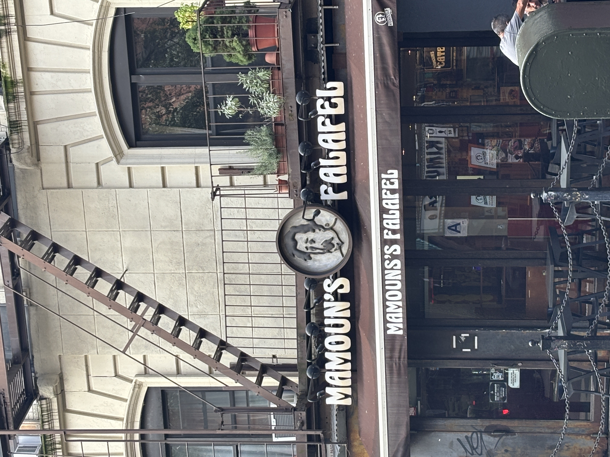

Maybe it's not an unusual thing to look for humanity in all things that surround us. There is a condition called pareidolia that describes the delusional impulse to ascribe personhood onto things that do not contain them.
But I'm not sure that all things don't contain personhood.
Anyone hungry?